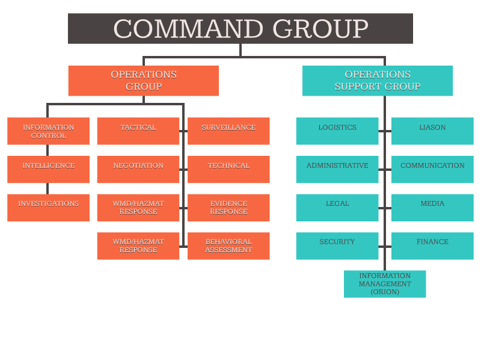
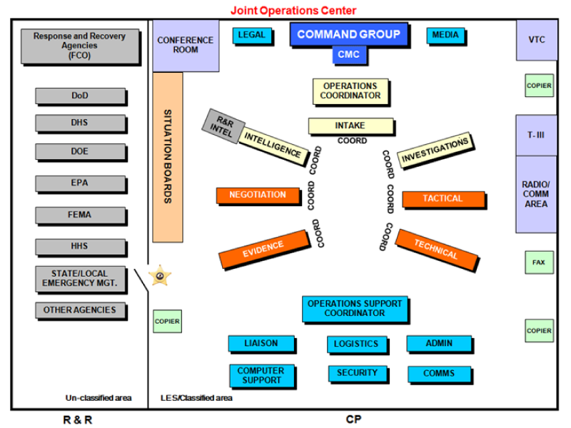
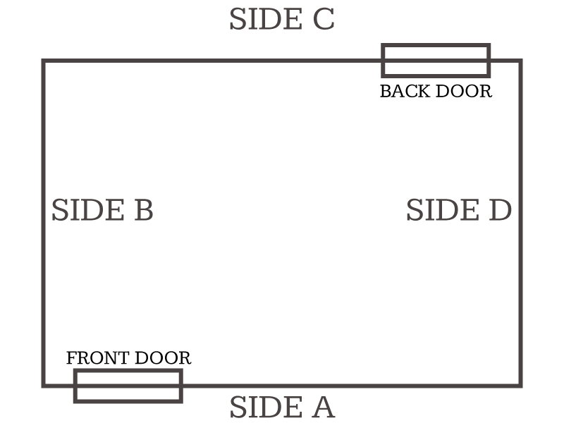
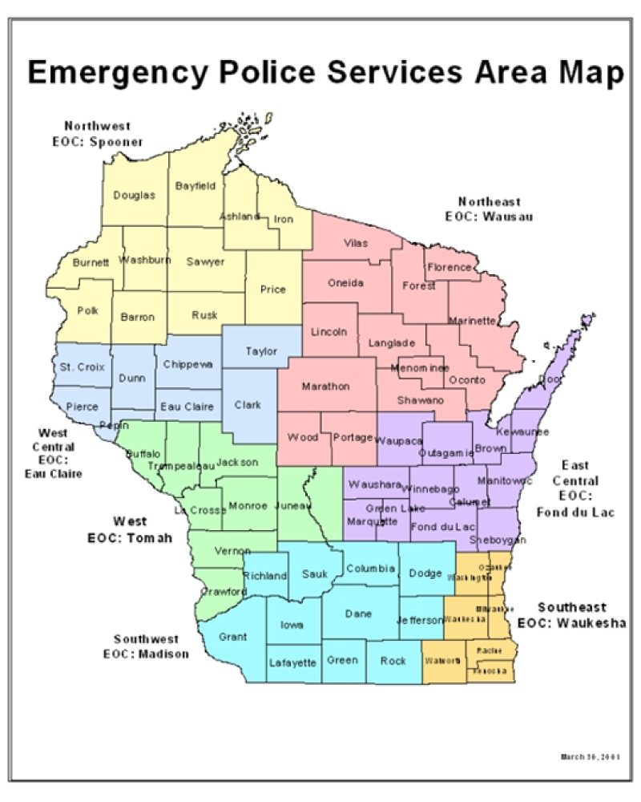

To ensure the development and maintenance of a competent crisis response apparatus, law enforcement agencies must take certain steps as a matter of routine operations before a critical incident occurs. The benefits of such preparation will be evident during the unexpected incident or planned events such as search warrant and arrest operations.
Agencies must have a current Crisis Response Plan (CRP) which is a set of pre-established procedures which informs and guides actions during a crisis situation. Supplemental information provides additional details to support crisis site-specific or act-specific incidents. The CRP must be periodically updated (the FBI suggests every three years) and posted to all applicable personnel.
Critical to maintenance of the CRP is the practice of its procedures. Planned exercises of all the components and activities dictated in the plan reinforce crisis response procedure and identify areas for improvement. Tabletop Exercises, Command Post Exercises, and Full Scale Exercises are some vehicles for this training. Frequent participation prepares the leadership and crisis staff for actual crisis management.
In addition, Command Post (CP) personnel and office staff must be trained and practiced in its use. The training should include regularly scheduled opportunities to practice Command Post set up, information flow in the CP, the use of appropriate information management systems, and the use of specialized software and resources that might be used in a CP environment.
The Crisis Management Coordinator (CMC) is the central figure in preparation and execution for critical incidents, special events and exercises. The CMC should be a sworn law enforcement officer and supervisor who understands investigative operations and has daily access to other supervisors and executive management.
This phase of a crisis may occur in escalating steps beginning with the initial notification to the agency. It marks a commitment to respond for assessment and management of a crisis situation.
The Crisis Management Team (CMT) should consist of the CMC and personnel from the Operations Group of the Command Post (CP), including coordinators of the following units:
An early decision to activate the Command Post or Emergency Operations Center (CP/EOC) will positively affect command, control, and communications at this crucial stage.
Specific incident planning checklists can be found later in this book for the following critical incident scenarios:
In addition to the immediate investigative, intelligence, interagency, and crisis resolution priorities, it is imperative to give early consideration to planning for long term operations.
This phase represents a continuation of deliberate planning functions:
With these elements intact, the crisis management team can begin implementation of tactical plans, evidence recovery, or HazMat/WMD operations.
Following the resolution of a critical incident, it is necessary to maintain control of the crisis site until all elements have completed their work and accounted for all personnel and equipment. Coordination with other agencies before standing down the operation will ensure that all concerns relative to the crisis are met while the area is still under agency control.
Command Posts are commonly established to monitor and manage a variety of matters, to include critical incidents, major investigations and/or special events. They may be staffed by a combination of local, state, and federal authorities for any type of investigative matter or event. The Incident Commander (IC) is often the highest-ranking law enforcement officer of the agency with primary jurisdiction, but it can be delegated down to a law enforcement officer as needed.
A command post can be utilized when the law enforcement agency is acting alone or when leading a task force, including drug or gang raids, child abductions, or local special events.
An Emergency Operations Center (EOC) is utilized when a terrorism, WMD, or significant criminal threat or incident warrants a major cooperative effort. A EOC may be established and staffed in a watch mode in support of significant special events, allowing for rapid expansion to full operational mode should a critical incident occur requiring a full response.
Wisconsin Emergency Management (WEM) operates the State Emergency Operations Center (SEOC), which can coordinate and request additional regional or even national assets.

The Command Group is led by the senior law enforcement officer of the agency with jurisdiction over the incident—it may be the Police Chief, Sheriff, Incident Commander (IC), Special Agent in Charge (SAC), or in their absence, their designee. The Command Group also includes the Crisis Management Coordinator (CMC), Media Representative, and senior decision maker representatives of partner agencies.
The Police Chief, Sheriff, SAC, or his/her designee, is responsible for the overall activity relating to the critical incident or major investigation to include developing strategic goals and objectives, directing law enforcement activities, and coordinating with other agency decision makers.
The Operations Group is the primary group responsible for processing information and intelligence and moving the investigation to a successful conclusion. In CP/EOC floor plan diagrams, the coordinators of Intake, Investigation, and Intelligence are physically located close to one another to facilitate the rapid and continuous flow of information.
In a very large CP/EOC operation, the IC will consider designating someone as the Operations Coordinator to strengthen horizontal and vertical communication.
Intake is responsible for receiving, assessing, and documenting new information. Information may come into the CP/EOC in a variety of ways, to include telephone calls, E-mails, facsimiles, mail and internal documents. The Intake Component is the central point for receiving incoming information.
The Intake Unit
It is imperative to continually evaluate the ability of the component to handle the flow of information and modify staffing and assignments to permit efficient receipt and assessment of incoming information. If a press conference is scheduled, additional call takers may be required to properly staff Intake so no citizen tips are missed due to an increase in call volume after the press conference.
Intelligence is responsible for providing intelligence requirements, collection, processing and exploitation, analysis and production, and dissemination processes that support the CP/EOC operation and the greater intelligence community.
The Intelligence Unit
The Intelligence Coordinator is responsible for coordinating and establishing the flow of intelligence within the CP/EOC, tracking and resolving all intelligence-related leads, and maintaining situational awareness.
Situation boards are used to provide an orderly, visual display of key data to all participants. The number of situation boards depends on the nature of the incident. The following are examples of situation board topics that may be used:
Situational awareness is also maintained with the use of electronic tools such as Law Enforcement Online (LEO) Virtual Command Center (VCC), E-Sponder, and other programs.
The Investigations Unit is responsible for the overall direction of the substantive investigation. The Investigations Unit must ensure the investigative process is thorough and appropriate, which includes overseeing the investigative support entities’ activities that are being performed on behalf of or at the direction of the agency.
The Investigations Unit
A representative of each field deployed team (special mission team) is placed in the CP/EOC to provide immediate subject matter expertise to the Command Group and the Operations Group members. These representatives should have a direct communication link with their field deployed teams and should be conversant in the terminology, tactics, techniques, and procedures of these field deployed special mission teams. They should also have access to the crisis information management system so they can retrieve information that is useful to their field deployed teams and forward the rest of the CP/EOC information provided from their field deployed team.
Common field deployed teams include SWAT, Negotiators, Bomb Technicians, Evidence Collection, Surveillance, and Technical Surveillance.
The Field Deployed Asset representative
The Operations Support Group positions are staffed by coordinators who provide advice and assistance within their respective areas of expertise, such as Operational Medicine, Victim/Witness Coordinators, Communications, Administrative/ Logistics/Liaison and Information Management.
Consequence Management positions are staffed by representatives from federal, military, state, local and private sector organizations and agencies with expertise in non-traditional law enforcement matters. These representatives provide recovery focused expertise in support of law enforcement activities. The Consequence Management Group will be incorporated into the EOC or the SEOC.
Law enforcement managers should ensure an understanding with consequence management/recovery representatives is in place to ensure investigative information that is restricted, law enforcement sensitive, and/or subject to rules of evidence or court orders is not inadvertently released by consequence management representatives or their headquarters unaware of law enforcement dissemination restrictions.

Law enforcement agencies must designate how and when they will obtain the assistance of tactical (SWAT) team(s) when needed.
Each SWAT team must be directed by a SWAT Team Leader. The Team Leader will maintain direct tactical command of the team during all operational deployments. During operations, the SWAT Team Leader will report to the IC at the crisis site.
A raid, arrest, search warrant or other situation posing a higher-than-normal risk may necessitate the use of a SWAT team to reduce the risk to officers, innocent persons, and subjects.
The determination as to whether a given situation meets “higher-than-normal risk” criteria will be made by the appropriate supervisor based upon an assessment of various factors, including the following:
The FBI recommends that SWAT team use be required if a proposed operation contains any of the following hazardous situations:
Additionally, the FBI suggests SWAT team use should be required when a proposed operation contains three or more of the following hazardous situations:
If a proposed operation contains two of the hazards listed above, the FBI recommends contacting the SWAT team leader to determine if there is a need for SWAT involvement.
In the event the IC chooses to exercise a tactical option, command and control of the SWAT team will pass from the IC to the Team Leader at a clearly defined point. Should the situation change the IC can halt the tactical teams at any of the phase lines. The teams can also be recalled if an extended delay is anticipated.
Phase lines are geographic locations established within the tactical operations order which are used during an assault to control the SWAT team’s movement to the crisis site. The FBI uses the following standards:
Phase Line Red - SWAT team’s staging/holding area.
Phase Line Yellow - SWAT team’s last point of cover and concealment and the point at which the SWAT Coordinator or SWAT Team Leader will request compromise authority from the IC, if appropriate for the operation.
Phase Line Green - SWAT team’s point of entry (breach point) into the crisis location.
In conjunction with the Team Leader’s assumption of command and control of tactical assets, the IC must grant Compromise Authority to the TL when the situation requires it. This allows the TL to make the determination if the assault should continue or be aborted in the event the tactical elements are discovered by the subject(s) prior to reaching the planned execution point. Compromise authority is generally necessary only when hostage lives are endangered as a result of hostage takers becoming aware of an imminent assault to rescue hostages.
Various methods are used to provide a common frame of reference in reporting activity around a target location. The four sides of a structure, vehicle, or vessel are labeled with colors, letters, or numbers to designate their location.
The Federal Bureau of Investigation uses colors: White (front), Black (rear), Red (right), and Green (left).
The Law Enforcement Standards Board “Tactical Response” academy curriculum teaches the clockwise use of letters, starting with “A” (front), “B” (left), “C” (rear), and “D” (right).
The Law Enforcement Standards Board “Tactical Response” academy curriculum teaches the clockwise use of letters, starting with “A” (front), “B” (left), “C” (rear), and “D” (right).

Agencies may use a clockwise numbering system, starting with “1” (front), “2” (left), “3” (rear), and “4” (right). Or, agencies may use another system.
It’s vital that the SWAT Coordinator, Team Leader, and officers clearly understand whatever tactical reference code is used, and use the same terminology.
A Tactical Operations Center (TOC) is a centralized coordination unit designed for and tasked with:
It is not a Command Post
The Emergency Assault Plan (EAP) is an immediate measure designed to regain control or stabilize a rapidly deteriorating crisis situation that poses imminent danger to the lives of innocent people. It generally lacks contingency planning, preparation, rehearsal, and full use of tactical capabilities. Consequently, execution of the EAP presents a high level of risk to all concerned. EAP approval authority rests with the IC.
Establish the EAP as soon as possible after the crisis occurs.
Elements of the plan (who, what, when where):
The Deliberate Assault Plan (DAP) encompasses tactics developed to accomplish crisis resolution. Unlike the EAP, the timetable and sequence for implementation are controlled by the IC. It is characterized by intelligence driven planning, contingencies, rehearsals, modification and risk assessment.
The DAP must reflect and support the IC strategy and it should use all possible measures to ensure full control by the IC and SWAT Team Leader. DAP approval authority rests with the IC.
Coordinate with negotiators to synchronize activities and support assault requirements.
Various tactical devices are discussed below. Agencies should give consideration to the points raised, and pre-plan the criteria for use, authorization required, and follow-up reporting requirements.
Only authorized flashbangs should be used. Flashbangs are not grenades or stun weapons. Their purpose is to distract, disorient and create an uncontrollable physiological/psychological response from the subject(s) through an audible and visual report. This diversion is utilized by the tactical team to cover their action and maintain, regain or enhance the element of surprise.
Some SWAT teams do not possess explosive breaching capability. Shotgun breaching may be adopted in incidents where other mechanical breaching methods would be ineffective. Only shotgun rounds designed for breaching and approved by the agency should be utilized for this purpose.
Approval is needed when delivery systems other than individual aerosol dispersers are utilized. Possible chemical agents may include:
Delivery systems may include:
When feasible, a bomb technician should be located in the CP/EOC to provide advice to the IC during any crisis situation involving explosives.
Special forms are available to provide recipients of bomb threats a tool to capture critical information during an extremely stressful moment.
In the immediate aftermath of a transportation crash, specialized agencies may become involved. The National Transportation Safety Board (NTSB) investigates catastrophic airplane crash sites and certain rail, highway, marine and pipeline accidents. The primary NTSB point of contact will be the assigned NTSB investigator in charge. In cases of suspected criminal activity, other agencies may participate in the investigation. The Safety Board does not investigate criminal activity; once it is established that a transportation tragedy is a criminal act, a law enforcement agency becomes the lead investigative body with the NTSB providing any requested support.
Checklist:
A report of a missing child can quickly expand into a full-scale investigation and search, complete with national news coverage. Studies have shown that of those children that are abducted and murdered, 74% are killed within three hours of the abduction.
The Wisconsin Department of Justice has prepared the Missing and Abducted Children – Response and Investigative Resource Guide. This comprehensive manual is available for download in the “Wisconsin Clearinghouse for Missing and Exploited Children and Adults” section of WILENET.
The Response and Investigative Resource Guide is intended to be used as a training manual, procedural and response guide, and resource handbook. Its information and checklists can be quickly accessed and used by patrol officers and supervisors, and it can also serve as a refresher for experienced investigators.
Consider requesting investigative assistance, crisis management expertise, and resources such as the National Center for Missing and Exploited Children (NCMEC), WisDOJ Division of Criminal Investigation (DCI), and/or the Federal Bureau of Investigation.
If the facts of the missing child incident are within the guidelines, immediately activate your local, state, or regional Amber Alert. Consult WILENET for the current guidelines and necessary forms.
The following is an excerpt from the U.S. Department of Justice, Federal Bureau of Investigation Shooting Incident booklet published in June 2003. This checklist is intended to provide basic reminders for a supervisor at the scene of an officer-involved shooting incident.
Resources may be requested from the Wis. Dept. of Military Affairs (WisDMA), Div. of Emergency Management, Emergency Police Services (EPS) program.
EPS regional coordinators may be found on the EPS website, http://emergencymanagement.wi.gov/EPS/mutual_aid_areas.asp. To request additional assets, contact the WEM Duty Officer at 800-943-0003, press 2.
Wisconsin Emergency Management maintains a statewide roster; the most recent edition is available in “News & Links” under the “Resources” section of WILENET.
Wisconsin’s Telecommunicator Emergency Response Taskforce (TERT) maintains a statewide roster of trained telecommunicators available to assist dispatch centers and command posts in a crisis. TERT is requested through Wisconsin Emergency Management (WEM), and its roster and supporting documents are available on WILENET.
The Aligned Law Enforcement Response Team (ALERT) program is administered by the Office of Justice Assistance in cooperation with Wisconsin Emergency Management. It is comprised of eight regional SWAT teams and five regional bomb teams. Requests for assistance should be directed through WEM’s Emergency Police Services (EPS) area directors.
Many communities maintain local SWAT and/or EOD teams
54th Civil Support Team, WI National Guard. If the local Incident Commander would like the 54th CST to assess, assist and advise them in a WMD/Hazardous Materials incident, make a request with the county Emergency Manager. The request is then routed through WEM’s Duty Officer, the on-duty Military Support Officer (MSO) and finally to the 54th's Commander. The Incident Commander can also contact the 54th’s Commander directly at 608-245-8400.